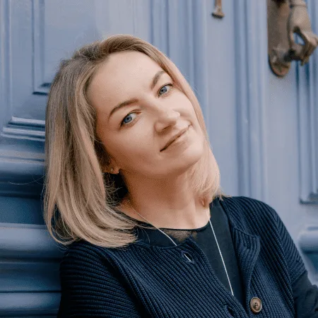

Artem Rodichev
Founder and Curator, TEDxEleftheriaSquare
Artem has organised more than 25 TEDx events in two countries. From 2014 to 2022 he ran TEDxSadovoeRing in Moscow: 23 events, 100 speakers and 5,000 guests in the room.
He is the founder and curator of TEDxEleftheriaSquare in Nicosia, and in October 2024 he led and co-hosted its event Symphony of Minds. Outside TEDx, he has spent more than 12 years in technology.
LinkedIn

Ekaterina Solovyeva
Co-Head, TEDxEleftheriaSquare
Ekaterina has co-led TEDxEleftheriaSquare since 2023, bringing people from different fields and backgrounds together around ideas. In 2025 the team received a Community Engagement & Diversity Excellence Award for Cyprus from Acquisition International.
Ekaterina is a corporate communications and brand director based in Limassol, with almost eight years at dentsu and a background in strategic programmes, reputation and social impact.
LinkedIn